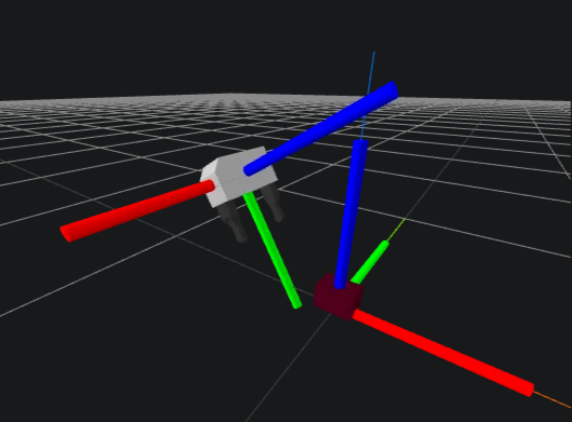

Rotz(-90), Rotx(-45). Once it's aligned, there is an offset in the Y and Z directions. Hence the answer must be (b).
In order to combine (and use) measurements from the different cameras, they need to be converted to a common representation. Frames can only be combined if they match. A common coordinate frame would typically be the world frame or the gripper frame. Change of representation is done by multiplying each camera's output by some pose $X$.